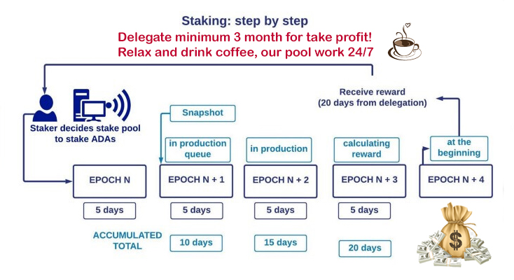
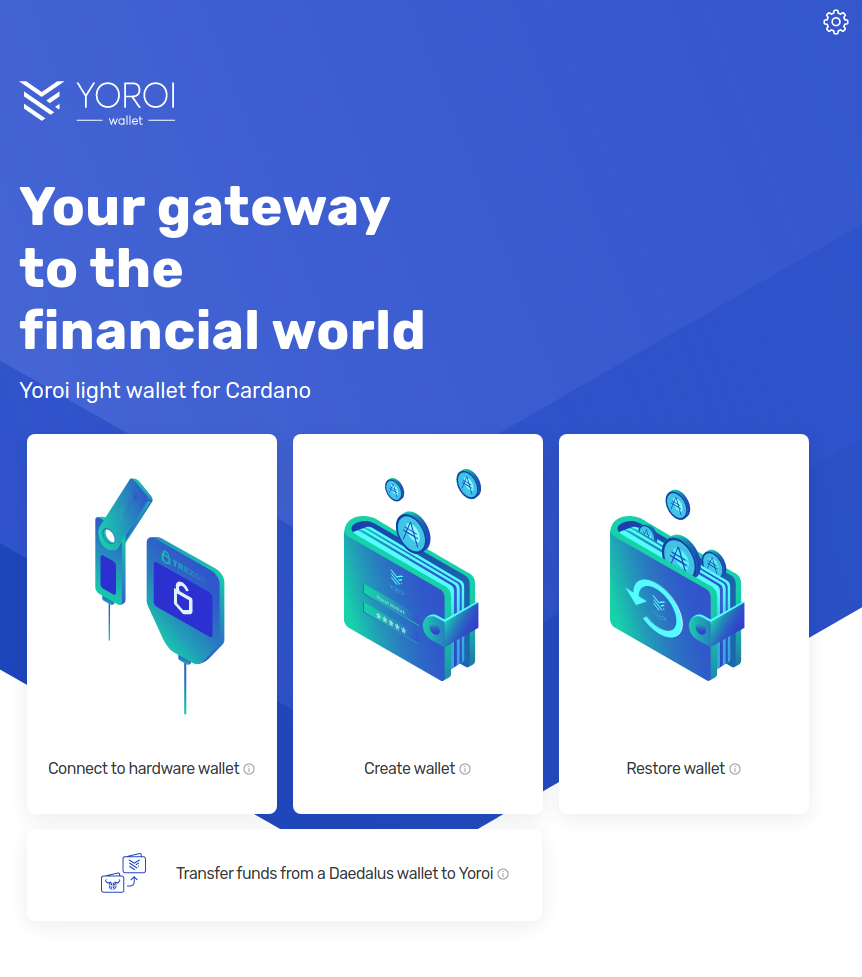
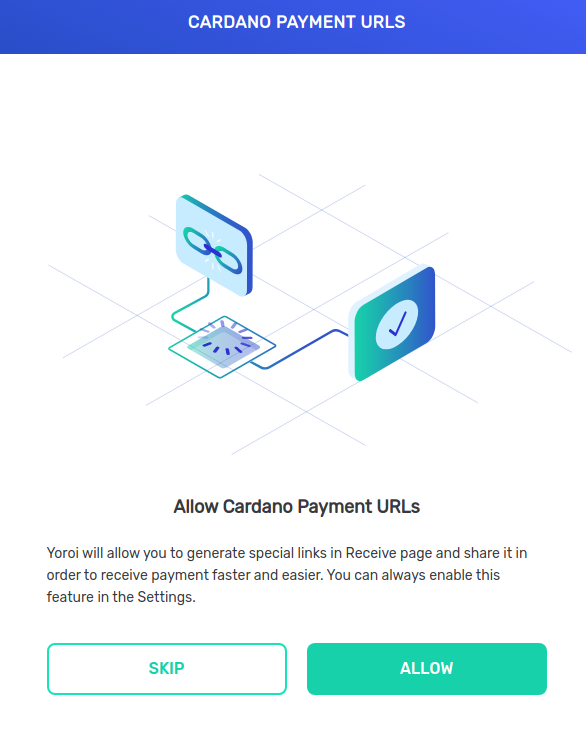
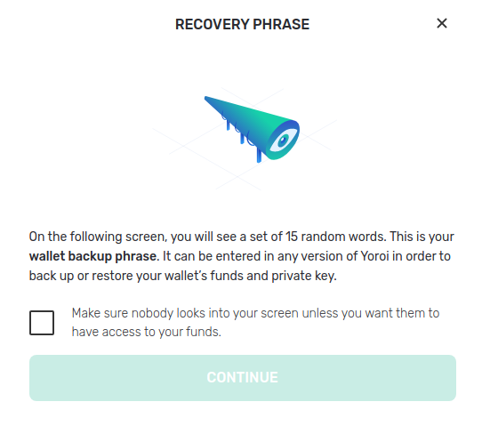
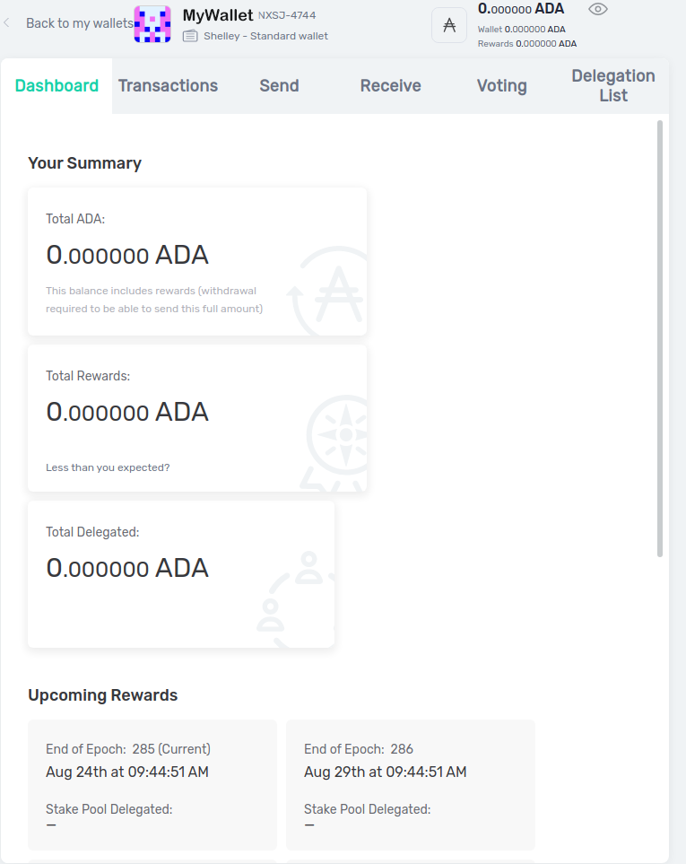
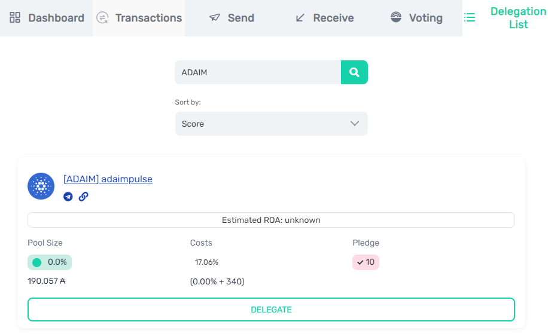

Contact
Do you have any questions? Do not hesitate to contact us.

Staking is the mechanism for how you get rewarded for participating in securing a proof-of-stake (PoS) Cryptocurrency blockchain. It is similar to mining in a proof-of-work (PoW) system like Bitcoin, but without the requirement to have powerful hardware in order to solve complex mathematical equations to be eligible to produce the next block on the blockchain.
A proof of stake system has a consensus algorithm that selects which node (stake pool server) will be eligible to add the next block to the blockchain. This decision is based on a number of criteria, but the main one being the total amount of coin that has been delegated to that pool. When someone delegates to a stake pool, that person is increasing that pool's chances of producing blocks. When a pool produces a block the system pays out a reward (from its reserves) which is the incentive mechanism to encourage people to run reliable nodes to produce and verify transactions on the blockchain. These rewards are then split between the stake pool operator and the delegators based on the amount that has been delegated (minus the fees to run the stake pool).
For a Cardano (ADA) delegator, the important thing to remember is that your ADA never leaves your own wallet. It is almost like you are tearing off a ticket stub (but keeping the important ticket) and putting this into a syndicate lottery draw to try and win the lottery. If you win, you share the rewards with your syndicate group (stake pool). You don't send anyone your ADA and no one can access your ADA without your private keys. The only thing you do need to do is submit a separate delegation transaction onto the blockchain, which is like a signup sheet to say which syndicate group your ticket stub is assigned to. We will show you how to do this simple process below.
The biggest benefit is that you get a passive return of roughly 4%-6% (per year) on your ADA. You can start receiving ADA payouts every five days once your delegation becomes active. You are also free to keep using or spending your ADA as you see fit. There are no lock up periods like other Cryptocurrencies and you can even delegate from a hardware wallet. Once you have delegated your wallet, your rewards and any new ADA you add to your wallet, get automatically delegated. The other benefit is by delegating your stake to a smaller pool it helps with a more diverse and decentralised network and contributes to a more secure Cardano system.
For any change in delegation, the rewards are reflected after 3 epoch transitions (thus, after 15-20 days). Checkout details below for how it works:

There are a few different ways of staking ADA on Cardano. The preferred method is when you set up and own your own wallet, securing your own keys, and delegating using one of Cardano's recommended wallets. The hardest part of this method is that you need to write down and secure the 15 random words that get generated when you first create a wallet. These are known as your private keys.
The other less preferred option is leaving your ADA on an exchange and staking through the exchange. While it may be convenient, there are a few big downsides with leaving your ADA on an exchange. Firstly you might have heard "not your keys, not your coins". This means that unless you are the only person who has your keys (your 15 random words), you don't truly own or control your cryptocurrency. A ridiculous amount of exchanges have been hacked, had funds stolen, or just plain disappeared with millions of cryptocurrency taken. You also might encounter exchange withdrawals or deposits being locked at times you really want to access your crypto. You also can't participate in voting on key decisions that will impact the future of the cryptocurrency ecosystem. Finally, you contribute to the problem of large centralised players having too much staking and voting rights in what should be a decentralised system. This is especially important in a proof of stake system where you don't want one person or group controlling a large portion of the cryptocurrency.
While not staking as such, the other option of making a return is lending via a decentralised finance (DeFi) or centralised finance (CeFi) platform. This normally means transferring your cryptocurrency into the hands of a custodian who holds it for the purposes of lending to others. You then get a return but it also comes with much higher risk so it won't be covered here.
The two main recommended wallets are Yoroi, a lightweight browser extension or mobile app, and Daedalus, a full node wallet for desktops that downloads the whole blockchain and is more suitable for advanced users. In this guide, we will cover Yoroi which is an easy to set up beginner option.
Step 1: Download the wallet directly from the official Yoroi website (going directly to the website helps to avoid the numerous fake wallets that are around). Depending what platform you are using (Android vs iPhone vs Browser) it will redirect you to the appropriate store to download directly.

Step 2: If you are doing the install on the browser, you will need to now open the newly installed Yoroi extension. You should find this in the top right hand corner of your browser with an icon as follows
Select your language, read and accept the terms of use, and allow Cardano Payment URLs, following up by clicking Allow on the pop-up, then Finish.

Step 3: Create your wallet

Step 4: Get familiar with the wallet screens

Step 5: Transfer your ADA into your wallet by generating a receive address and copying this into the withdrawal screen of your exchange. You can send a small test amount if this is your first time.
Step 6: Delegate your ADA.

And there you have it! You are now delegating with your own wallet and receiving rewards by helping contribute to secure the Cardano network!
Do you have any questions? Do not hesitate to contact us.